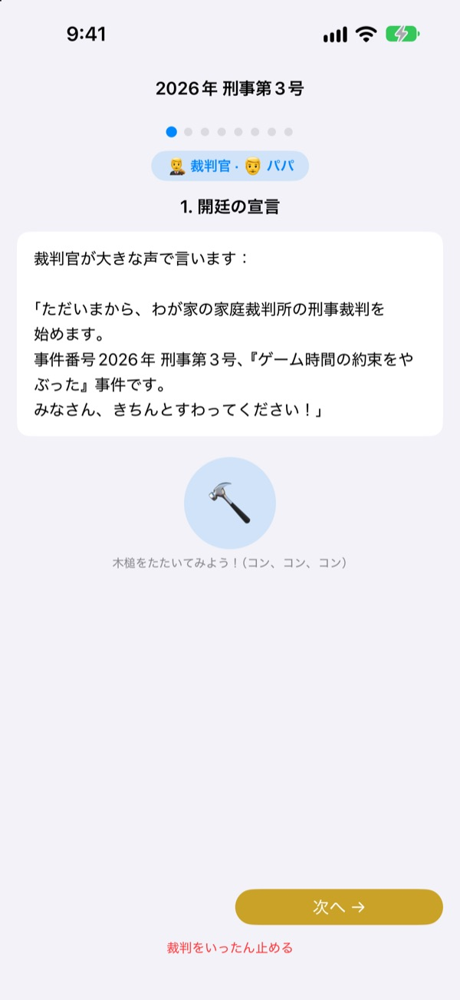
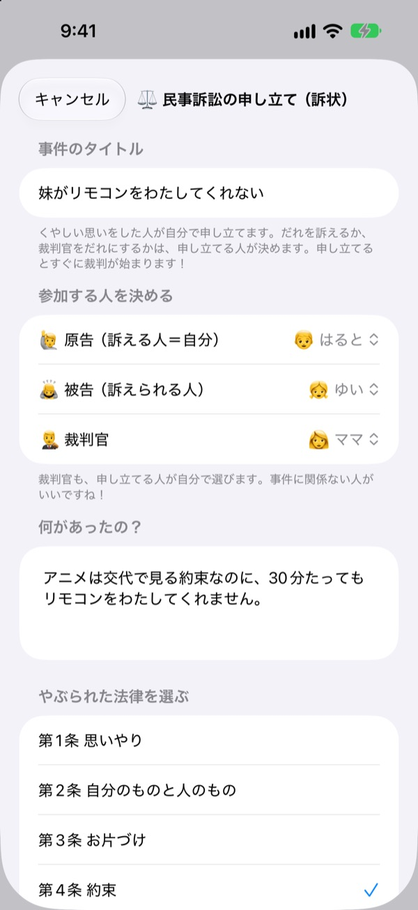
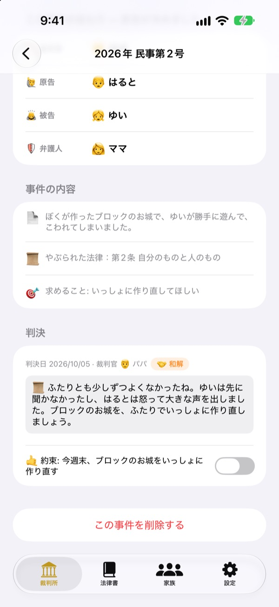
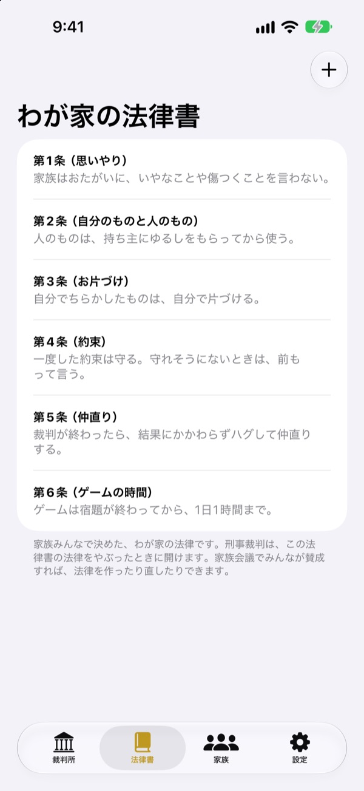

くやしいことは、
泣かずに裁判で
子どもが自分で原告になって訴状を出し、家族が裁判官や弁護人を分担します。段階ごとに、誰が何を話す番かをせりふで案内するので、はじめてでも本物の裁判のように進みます。
広告も課金も登録もありません。記録はこの端末の中だけに残ります。

裁判を開いてみよう
「弟がリモコンを貸してくれない」事件を短く開いてみましょう。上でことばのレベルを切り替えたり、木槌をたたいたり、タイマーを動かしたりしてみてください。音が出るので音量にご注意を。
「先にやったのはあっち！」毎回どっちが正しいか決めるの、疲れませんか？
けんかが起きると、結局は大人が判決を出し、負けた子はくやしくて泣き、勝った子はなぜ勝ったのかわからないまま。ファミリーコートは、自分の言い分を最後まで話し、相手の言い分も最後まで聞く順番を子どもに渡します。判決は罰より約束で終わります。
くやしい人が自分で訴えます
くやしいことがあったら、その人が原告になって訴状を出します。誰を訴えるか、誰が裁判官をするかも、訴える人が決めます。子どもがお父さんお母さんを訴えることもできます。
わが家の法律がやぶられたのを見たら、検察官になって刑事裁判にかけることも。裁判官は原告と被告以外の人しかなれません。

罰より約束で終わります
判決といっしょに守る約束や罰を決め、守れたかどうかを最後までチェックします。終わった事件はわが家の判例として積み重なります。
おすすめの罰は「元にもどす」「気持ちを返す」のように、罰するより関係を取りもどすものから表示。ゲームやテレビを減らすのは最後の手段です。

わが家の法律はわが家で決める
思いやり、片づけ、約束など、家族で決めたルールを条文にして書いておき、いつでも追加・修正できます。訴状には、やぶられた法律を選んで書きます。
「裁判所を学ぼう」では、裁判官・原告・検察官・弁護人の役目と裁判の流れを学べます。

始めるのは3ステップ
- 1
家族を登録
名前と絵文字だけでOK。アカウントはいりません。
- 2
事件を受けつける
くやしいことは民事、わが家の法律違反は刑事で受けつけて、裁判官を選びます。
- 3
裁判を開く
せりふをなぞり、タイマーで時間を守り、木槌で判決を言いわたします。
子どもの年に合わせて変わることば
- 裁判官
- やさしいことば: しんぱん · 法廷用語: 裁判長
- 原告
- やさしいことば: くやしい思いをした人 · 法廷用語: 原告
- 被告
- やさしいことば: こたえる人 · 法廷用語: 被告
- 検察官
- やさしいことば: しらせた人 · 法廷用語: 検察官
- 被告人
- やさしいことば: こたえる人 · 法廷用語: 被告人
- 弁護人
- やさしいことば: たすける人 · 法廷用語: 弁護人
- 民事
- やさしいことば: もやもや · 法廷用語: 民事
- 刑事
- やさしいことば: やくそくやぶり · 法廷用語: 刑事
設定の「ことばのレベル」で選ぶと、画面とせりふのことばがまとめて切り替わります。幼稚園児は「やさしいことば」、小学生は「ふつう」から試してみてください。
よくある質問
何歳から使えますか？
字が読める子なら、親といっしょに楽しめます。せりふと案内があり、ことばのレベルを「やさしいことば」にすれば、大人が読んであげながら、もっと小さな子も参加できます。
本当に無料ですか？
はい。広告も、機能を開く課金もありません。設定に開発者を応援するチップがありますが任意で、どの機能も開いたり閉じたりしません。
インターネットは必要ですか？
必要ありません。裁判も記録もすべてオフラインで動きます。設定から意見を送るときだけ、インターネットとiCloudへのサインインが必要です。
記録はどこに保存されますか？
家族・法律・裁判・判決の記録は端末の中だけに保存され、サーバーには送られません。開発者に届くのは、自分で送った意見と、誰が使ったかわからない匿名の利用統計だけです。
記録をバックアップしたり、ほかの端末に移したりできますか？
設定の「記録を保存」でファイルに書き出し、ほかの端末で「記録を読み込む」からそのファイルを開けば、そのまま復元されます。以前のウェブ版で書き出したバックアップも読み込めます。
iPadでも使えますか？
はい。iPhoneとiPadの両方で使えます。大きな画面を囲んで家族で裁判するのにぴったりです。
罰が重くなりすぎたら？
検察官が罰を求める段階で、せりふが「重すぎず、守れるものに」と念を押します。おすすめの罰も、元にもどす、気持ちを返す、立場を入れかえて考えるなど、関係を取りもどすものから表示します。
データを完全に消したいです。
アプリを削除すると、端末に保存された記録はすべていっしょに消えます。外に出た記録はないので、ほかに残る場所もありません。送った意見を消したい場合はメールでお知らせください。
不具合、機能のアイデア、そのほか何でも leeo@kakao.com までお気軽にどうぞ。アプリの設定から意見を送ることもできます。